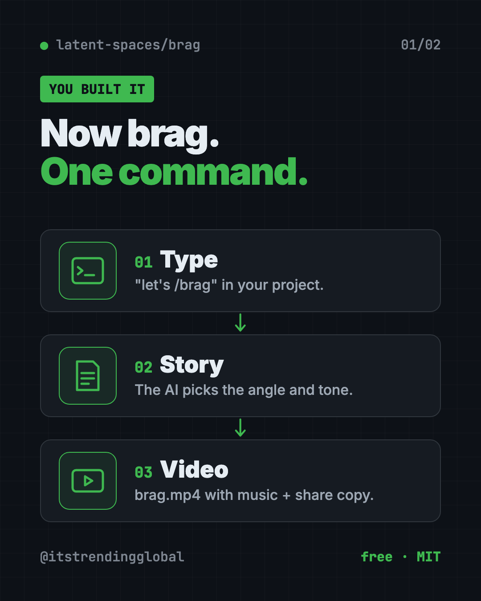
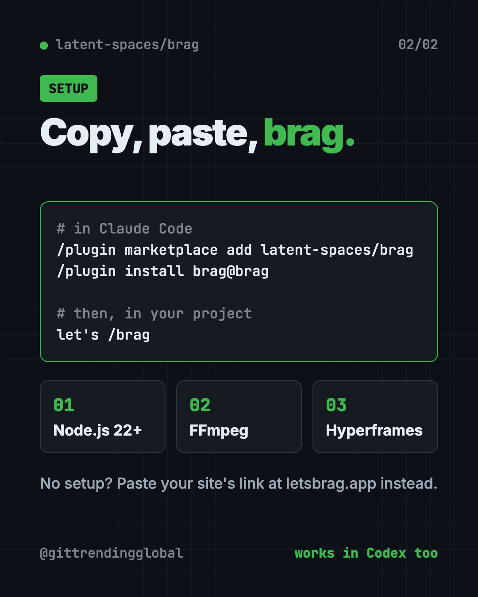

Brag: A Free AI Launch Video Maker for Your Project
- Published 15 Oct 2026
- Updated 16 Oct 2026
- 6 min read
- License MIT
- By the ITG Now team
Brag is a free AI launch video maker that lives inside your AI coding helper. You type /brag in a project you built, and it makes a short launch video with music, motion and ready-to-post text.
Its tagline says it best: "You built it. Now brag." The project has about 16.1K stars on GitHub.
Key takeaways
- One command. Type
let's /bragin your project and get a finished video file,brag.mp4. - Share text included. You also get the plan, a brief and copy for your posts.
- Free and open source under the MIT license.
- Works with Claude Code, Codex, opencode, Cursor, Gemini CLI and other agents that support skills.
- No setup option. Paste your site's link at letsbrag.app and they run it for you.
What is Brag?
You finally finished your project. Maybe it's a website, an app or a small tool. Now you want to tell the world.
A plain screenshot gets scrolled past. A real launch video gets noticed, but most people don't have the time or editing skills to make one.
Brag fills that gap. It's an "agent skill." That's a set of instructions your AI coding helper can follow, like a recipe card. Brag's recipe: look at your project, find the story, and turn it into a short video.
The README says Brag "owns the story": the angle, the tone, and which moments to show. Then it hands a brief to Hyperframes, a free video tool from HeyGen, which builds, times and renders the video.
Fun fact: the looping video on Brag's own launch site was made by /brag on its own code.

What do you get from Brag?
After it runs, you find a new folder called brag-output/ in your project. Inside:
- The plan for your video.
- A composition brief, which is the scene-by-scene recipe.
- Share copy, ready to paste into your posts.
- The video itself,
brag.mp4, with music and motion.
Voiceover is off by default. Add --voice to turn it on. The README says narration uses Kokoro, a voice tool, through Hyperframes.
How to use Brag (real examples)
- Launch day post. Finished a side project? Run
/bragand post the video on X, LinkedIn or Instagram the same day. - Show a client. Built a site for someone? Send them a short video tour instead of a list of links.
- Pick a fun tone. Try
/brag --tone "fake Series A launch from 2016", an example from the README. - Add a voice. Use
/brag --voicewhen you want spoken narration on top. - No coding helper at all? Paste your website link into letsbrag.app. The site says you get a 20-second launch video with music, motion and share copy.
💡 Tip: Run Brag after your project has a working home page. The AI needs something real to show, so the more finished your project looks, the better the video.
Is Brag free?
Yes. The Brag skill is free and open source under the MIT license.
You still need an AI coding helper like Claude Code or Codex, and those may cost money. The letsbrag.app website says "no setup, no subscription," but the README doesn't list a price for it.
What's new: /brag-slim
The README added a lighter version called /brag-slim. It's "the same /brag, rebuilt lean" for Claude's Opus 5.5 model.
It skips Hyperframes and the bundled music files but keeps the same creative rules. Each video still gets its own soundtrack and share text.
On Opus 5.5, /brag switches to /brag-slim automatically. Type /brag --full if you want the classic version.
Brag at a glance
| Price | Free (your AI helper may cost money) |
| Works offline | No, your AI helper runs online |
| Platforms | Mac, Windows, Linux, inside an AI coding helper |
| Works with | Claude Code, Codex, opencode, Cursor, Gemini CLI and more |
| License | MIT (open source) |
| Needs | Node.js 22+, FFmpeg, Hyperframes |
| Best for | Makers, indie founders and creators launching something new |
How to install Brag
You need three things first: Node.js 22 or newer (free, from nodejs.org), FFmpeg (a free video tool), and an AI helper that supports skills.
In Claude Code, type these where you talk to Claude:
/plugin marketplace add latent-spaces/brag
/plugin install brag@brag
In Codex, open Terminal, then copy and paste this:
codex plugin marketplace add latent-spaces/brag
codex plugin add brag@brag
For any other agent (Cursor, Copilot, Gemini CLI, opencode), copy and paste this:
npx skills add https://github.com/latent-spaces/brag --skill brag
Add -g at the end to make it work in every project.
To check that Hyperframes is ready, copy and paste this:
npx hyperframes doctor
Then open your project and tell your AI helper:
let's /brag
⚠️ Heads up: On Windows, the README says you may need to turn on symlinks (
git config core.symlinks true) and Developer Mode. If that fails, copy theskills/brag/folder into your agent's skill folder by hand.

Let Claude or Codex set it up for you
Claude Code and OpenAI Codex are AI helpers that run setup steps on your computer. You paste a request and approve each step.
Copy and paste this:
Please help me install the Brag skill from github.com/latent-spaces/brag.
1. Check that I have Node.js 22 or newer and FFmpeg. Help me install what's missing.
2. Install Brag the way the README says for the AI helper I'm using.
3. Run "npx hyperframes doctor" and fix anything it flags.
4. Explain each step in plain words before you run it.
5. Then run /brag on this project and show me where the video is.
Then try asking:
/brag --tone "calm, friendly product tour for small business owners"
Make the Brag video again with a voiceover, using /brag --voice.
Rewrite the Brag share copy as an Instagram caption and a LinkedIn post.
Our take
Brag solves a real problem: most makers stop at "it works" and never show it off well. One command gets you a video and post text.
What we like:
- One command, real result: a finished MP4 plus share copy.
- Works across many AI helpers, not just one.
- Fun tone control with plain words.
- Free and open source, with a no-setup website for non-coders.
What to watch for:
- Needs Node.js, FFmpeg and Hyperframes, which is a bit of setup.
- Your AI helper may cost money to run.
- Windows needs extra steps for symlinks.
- The video is only as good as what your project shows.
Want more video help? See OpenMontage, which turns your AI helper into a video studio, or Recordly, for polished screen recordings and demos. Need to edit the result? Try OpenCut, a free CapCut alternative.
FAQ
What is Brag?
Brag is a free AI launch video maker. It's a skill for AI coding helpers that turns your project into a short launch video with music and share text.
Is Brag free?
Yes. The skill is free and open source under MIT. The AI helper you run it in may cost money.
Which AI tools work with Brag?
The README lists Claude Code, Codex, opencode, Cursor, Copilot, Gemini CLI and Google Antigravity, among others.
Can I use Brag without coding?
Yes. Paste your site's link at letsbrag.app, and it runs Brag for you and returns a 20-second video.
Does Brag add a voiceover?
Only if you ask. Voiceover is off by default. Type /brag --voice to turn it on.
Where does Brag save the video?
In a brag-output/ folder inside your project, as brag.mp4, next to the plan and share copy.
Get Brag: github.com/latent-spaces/brag
Keep reading

net-merge: Combine Wi-Fi and Phone Internet, Free
net-merge is a free app to use two internet connections at once, like Wi-Fi plus a phone hotspot, on Windows, Mac and Linux. No account or VPN.

ArtCraft: Free AI Video and Image Studio
ArtCraft is a free AI video and image studio. Build your scene in 2D or 3D first, then let an AI model make the image or video. Mac and Windows.

DBX: Free Database Client for 100+ Databases, With AI
DBX is a free database client that opens 100+ kinds of databases in a 25 MB app. Its AI helper turns plain English into database queries for you.